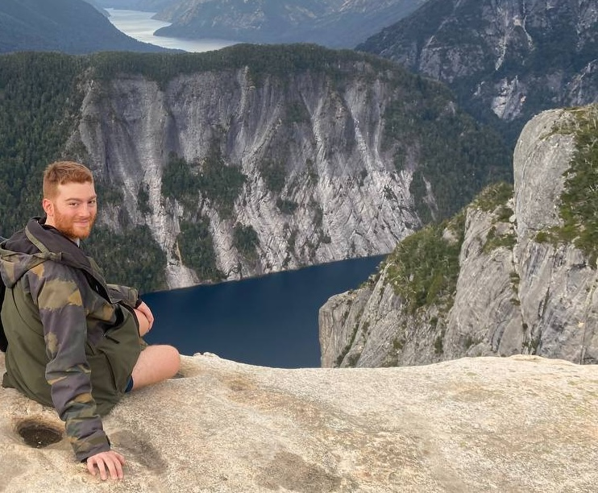

Hey there! You have reached my digital home. Here you’ll find content about my professional life, including scientific publications, projects, software, and (soon) general interest blog entries.
My name is Lucas Miranda. I was born and raised in Buenos Aires, Argentina, where I studied molecular biology and bioinformatics at the University of Buenos Aires. I recently completed my doctorate at the Technical University of Munich, directed by Bertram Müller-Myhsok at the Max Planck Institute of Psychiatry (I will upload my thesis as soon as it’s published!).
Since June 2023, I work as a postdoctoral researcher at the Max Planck Institute of Biochemistry in Munich, Germany, as part of the Machine Learning and Systems Biology research group. My current research focuses on representation learning of biological and medical data, with a particular interest in clinical proteomics and medical time series, including electronic health records and intensive care unit trajectories.
We live in exciting times, where machine learning models are becoming better by the day in many domains. My goal is to contribute my bit to the development of this technology in the medical field, which can ultimately benefit billions of people. Thank you for tuning in, and I hope you find something useful!
